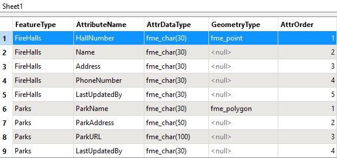
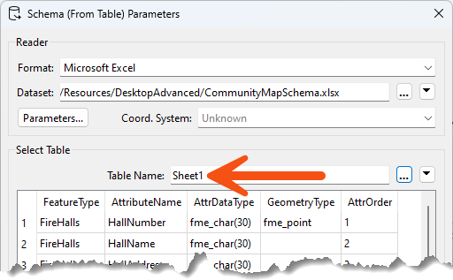
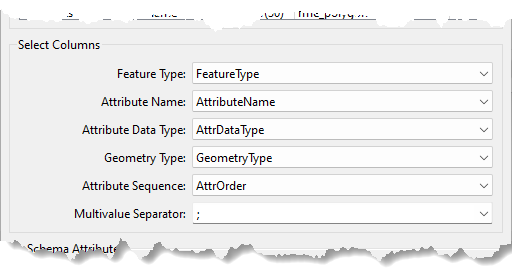
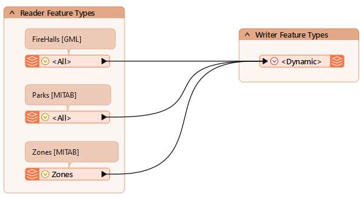
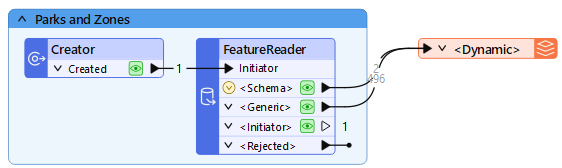
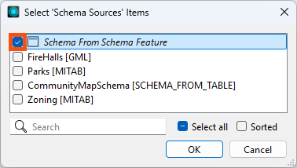

In the past exercise, you created a new community map dataset for the planning department using a dynamic schema. We defined only two tables then, but now, another is required, and the planning department wants you to update the workspace.
You can create an Excel spreadsheet containing the schema definition rather than making changes each time they add more datasets. That way, the planning team can own the schema definition without interacting with FME directly.
Open and examine the spreadsheet CommunityMapSchema.xlsx (or C:\FMEData\Resources\DesktopAdvanced\CommunityMapSchema.xlsx).
If you don't have Excel, open it in the FME Data Inspector and switch to Table View.

The table has schema definitions for Firehalls, Parks, and Zones feature types. You can see how each new table has a series of attributes defined for it (each attribute is a separate row in the spreadsheet), including attribute type and attribute order. Geometry type only needs to be defined once per table.
Start FME Workbench (2025.1 or later). Open the workspace from the previous exercise or the starting workspace.
Because we are using a spreadsheet to define our output schemas, the CommunityMap Resource Reader is no longer needed. You can find it in the Navigator window, right-click it, and choose Delete.

When prompted, click Yes to confirm that FME will remove all references to this dataset.
Now select Build > Readers > Add Reader as Resource. In the dialog that opens, choose:
| Reader Format | Schema (From Table) |
| Reader Dataset | https://s3.amazonaws.com/FMEData/FMEData/Resources/DesktopAdvanced/CommunityMapSchema.xlsx or C:\FMEData\Resources\DesktopAdvanced\CommunityMapSchema.xlsx |
Use the Schema (From Table) format, not Excel!
Click the Parameters button (OK will be disabled until you do). This dialog is where we can define how the table maps to the required schema.
Check the reader parameters at the top. They should show that the dataset is an Excel file. Select Sheet1 under the Select Table > Table Name parameter if it is not already selected:

Select the appropriate fields to match the required parameters (for example, Feature Type = FeatureType):

Click OK to close the dialog and again to add the resource reader.
You can give the fields in such a lookup table any name you desire. In this example, we used the same name as the parameter to make the relationship obvious. Some of them (Geometry Type and Attribute Sequence) are optional and don't have to be part of the schema definition if not needed.
Now, look over the feature type parameters for the writer feature type.
Under the User Attributes tab, remove the LastUpdatedBy attribute. We've added this to the spreadsheet definition for each type and no longer need it here.
In the Parameters tab, click the Schema Sources edit button. Uncheck FireHalls and check CommunityMapSchema [SCHEMA_FROM_TABLE]:

Accept the changes to these parameters.
If you noticed, the schema spreadsheet included an entry for the Zones dataset, so add a reader (not a Resource – we want the data this time) as follows:
| Reader Format | MapInfo TAB (MITAB) |
| Reader Dataset | https://s3.amazonaws.com/FMEData/FMEData/Data/Zoning.zip or C:\FMEData\Data\Zoning\Zones.tab |
Once added, connect its reader feature type to the dynamic writer feature type.

Save the workspace and then run it.
Inspect the output. Notice that FME has written all three feature types, and their attribute schema matches what we defined in the Excel spreadsheet, including the LastUpdatedBy field for each one.
However, we still need to instruct FME on how to link the new, externally defined schema to the existing one. For this reason, all of the new attributes defined in the external schema table have missing values in the output data. You can address this issue with a SchemaMapper or SchemaScanner.
Before addressing the schema mapping issue, let's use a FeatureReader and schema feature to define the output schema in a dynamic workspace.
We'll keep the existing objects in the workspace and use them in the next course. But let's add a new Creator and FeatureReader to show a different way to configure a dynamic workspace.
Connect the Creator to the FeatureReader and configure the FeatureReader to read both Zoning and Parks data like this:
| Reader Format | MapInfo TAB (MITAB) |
| Reader Dataset |
https://s3.amazonaws.com/FMEData/FMEData/Data/Zoning.zip,https://s3.amazonaws.com/FMEData/FMEData/Data/Parks.zip or C:\FMEData\Data\Zoning\Zones.tab,C:\FMEData\Data\Parks\Parks.tab Note: if you paste these paths in, make sure you delete the double quotation marks |
| Output Ports | Single Output Port - <Generic> |
Click OK and run your workspace. This section of your workspace should look like this:

If you inspect the output ports, you will notice two things:
We can use these two sets of features to write our data using a generic writer.
Use Writers > Add Writer to add a writer. Configure it like this:
| Writer Format | OGC GML (Geography Markup Language) |
| Writer Dataset | C:\FMEData\Output\Training\NewCommunityMapSchemaFeature.gml |
| Feature Type Definition | Dynamic (Advanced) |
Click OK to add the writer feature type. Move it next to your FeatureReader and connect it to the <Schema> and <Generic> ports.

Double-click the writer feature type. It is automatically configured to use the fme_feature_type attribute to define the destination feature type names. That is correct. However, it is currently using the readers as Schema Sources. Click the ellipsis next to Schema Sources and choose only Schema From Schema Feature.

Click OK twice to close the dialogs.
Rerun the entire workspace. We must rerun the entire workspace because the Data Caching might cause the <Schema> features to arrive at the writer after the <Generic> features. The <Schema> features must arrive first. Inspect the output of the <Dynamic> writer feature type you just configured. The Parks and Zoning layers are written to GML with their original schemas.
The schema feature method, as illustrated here, allows you to write out the results of any data read in by a FeatureReader without modifying the underlying schema or having to use a SchemaMapper or SchemaScanner. This example is limited to a single format, though you could combine it with a Generic writer or multiple writers to handle multiple output formats. We'll look more at using schema features in the next course in the Learning Path, Construct Schema Dynamically with the SchemaScanner.